3 May 2017
ggplot2
Learning objectives
By the end you should be able to:
- Understand the basic grammar of ggplot2 (data, geoms, aesthetics, facets).
- Make quick exploratory plots of your multidimensional data.
- Know how to find help on
ggplot2when you run into problems.
Before, there was ggplot1
Released in 2005 until 2008 by Hadley Wickham.
If the pipe ( %>% in 2014) had been invented before,
ggplot2would have never existed Hadley Wickham
Original syntax
# devtools::install_github("hadley/ggplot1")
p <- ggplot(mtcars, list(x = mpg, y = wt)) %>%
scbrewer(ggpoint(p, list(colour = gear)))with the pipe
# devtools::install_github("hadley/ggplot1")
library(ggplot1)
mtcars %>%
ggplot(list(x = mpg, y = wt)) %>%
ggpoint(list(colour = gear)) %>%
scbrewer()ggplot2
library(ggplot2)
mtcars %>%
ggplot(aes(x = mpg, y = wt)) +
geom_point(aes(colour = as.factor(gear))) +
scale_color_brewer("gear", type = "qual")Issue
Introduced a break in the workflow from %>% to +
What is ggplot2
released in 2007
ggplot2stands for grammar of graphics plot version 2- Inspired by Leland Wilkinsons work on the grammar of graphics in 2005.
- The idea is to split a graph into layers: for example axis, curve(s), labels.
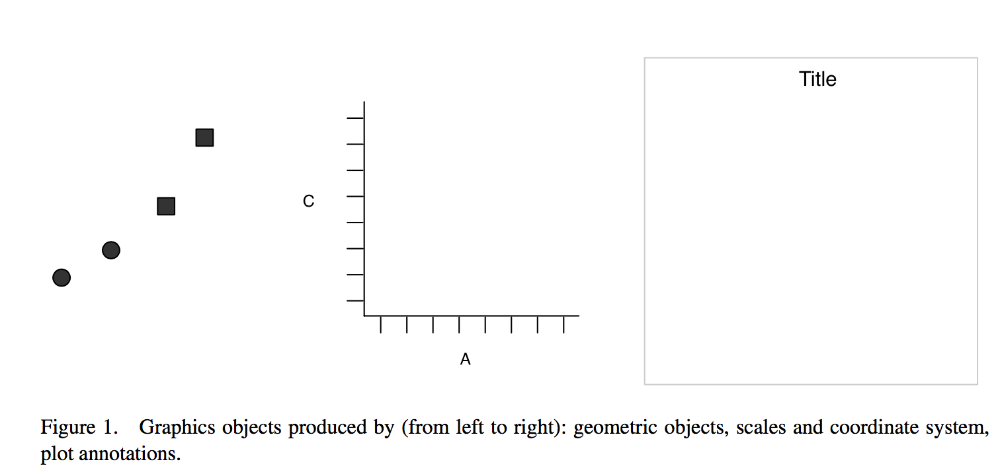

Simple example
Wickham 2007
dataset
| x | y | shape |
|---|---|---|
| 25 | 11 | circle |
| 0 | 0 | circle |
| 75 | 53 | square |
| 200 | 300 | square |
3 layers combined
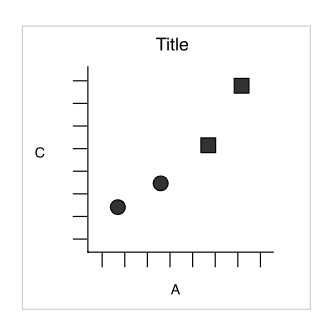Faceting (treillis / latticing)
What is we want to split circles and squares?
Faceting
Wickham 2007
Split by the shape
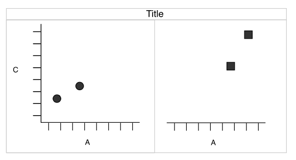Redundancy
Now, dot shapes and facets give the same information. Shapes could be freed for another meaningful variable
layers

for real
tribble(
~x, ~y, ~shape,
25L, 11L, "circle",
0L, 0L, "circle",
75L, 53L, "square",
200L, 300L, "square"
) %>%
ggplot(aes(x = x, y = y, shape = shape)) +
geom_point(size = 4) +
facet_wrap(~ shape) +
coord_cartesian() +
theme_classic(base_size = 18)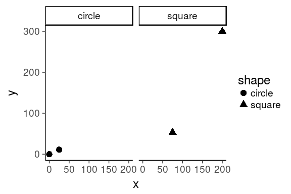

Motivation for this layered system
football example
Data visualisation is not meant just to be seen but to be read, like written text - Alberto Cairo
Using the following dataset
library(tidyverse)
allSeasons <- read_rds("allseasons.rds")
oneSeason <- allSeasons %>% filter(year == 2016)
allSeasons
# A tibble: 1,556 × 12
club score year country n rank allRank atb atw eb
<chr> <int> <int> <chr> <int> <int> <int> <int> <int> <int>
1 ManUnited 1876 2001 ENG 20 1 6 2031 1831 1927
2 Liverpool 1876 2001 ENG 20 2 5 2020 1826 1918
3 Leeds 1843 2001 ENG 20 3 11 1979 1793 1880
4 Arsenal 1820 2001 ENG 20 4 14 1946 1776 1868
5 Chelsea 1794 2001 ENG 20 5 18 1860 1738 1865
6 Ipswich 1744 2001 ENG 20 6 31 1830 1710 1840
7 Sunderland 1732 2001 ENG 20 7 34 1802 1688 1813
8 AstonVilla 1725 2001 ENG 20 8 42 1775 1667 1796
9 Newcastle 1704 2001 ENG 20 9 46 1765 1663 1792
10 Middlesbrough 1699 2001 ENG 20 10 49 1737 1661 1791
# ... with 1,546 more rows, and 2 more variables: ew <int>, tenth <int>source John Burn-Murdoch working at the Financial Times
questions & solutions
Questions
- which countries have the best teams?
- which leagues are the most/least balanced?
- what is the 'quality gap' between a given pair of leagues?
- how does the nth best team in league x today compare to its predecessors?
- how have all of the above changed over time?
Stat solutions
- linear comparison
- distribution of parts within the whole
- difference in area between two curves
- value in context
- evolution of an already detailed pattern over time
Visual solutions
points
points on a line
ribbon
shaded range
faceted plots
source John Burn-Murdoch working at the Financial Times
1. which countries have the best teams in 2016?
oneSeason %>% ggplot(aes(x = year, y = score, colour = country)) + geom_point(size = 3) + scale_x_discrete() + theme_bw(18)

size = 3increases the size of all dots. Not inaes()scale_x_discreteis to force the 1 value on the x axis to be discretetheme_bw()is a pre-defined black/white theme, where all fonts are set to size = 18
Issue
we can't see much. Improve the x mapping
1. which countries have the best teams in 2016?
with rank
oneSeason %>%
ggplot(aes(x = rank, y = score,
colour = country)) +
geom_point(size = 3) +
theme_bw(18)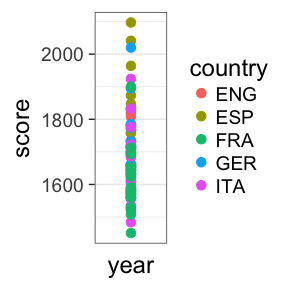
scale_x_discreteis useless now, we have a continuous variable.
Spain
Now obvious that Spain does well, even for low ranking clubs
2. which leagues are most/least balanced in 2016?
oneSeason %>%
ggplot(aes(rank, score,
colour = country)) +
geom_line() +
geom_point(size = 3) +
theme_bw(18)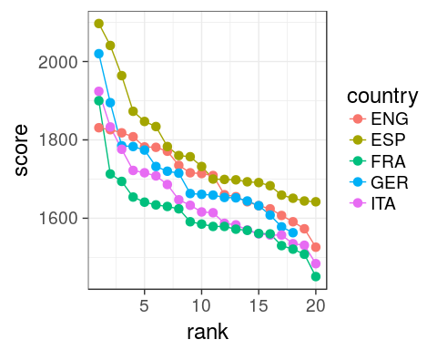
xandycould be omitted, better to specify them though.
Issue
Hard to see differences, ENG seems more coherent
2. which leagues are most/least balanced in 2016?
with range
oneSeason %>%
group_by(country) %>%
summarise(min = min(score),
max = max(score),
range = max - min) %>%
mutate(country = forcats::fct_reorder(country, range)) %>%
ggplot(aes(x = "2016", y = range, fill = country)) +
geom_col(position = "dodge") +
theme_classic(18)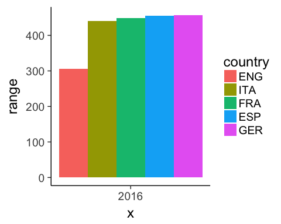
Tip x-axis
force the discretization using 2016 as character
Tip fill
use dodging to get all bars on the same x index
Tip fill order
reorder levels based on a numeric variable using fct_reorder
3. Quality gap between England and Spain in 2016?
score diff at each rank
oneSeason %>%
select(score, rank, country) %>%
filter(country %in% c("ENG", "ESP")) %>%
spread(country, score) %>%
rowwise() %>%
mutate(gap = ESP - ENG,
min = min(ESP, ENG),
max = max(ESP, ENG)) %>%
ggplot(aes(x = rank, fill = gap > 0)) +
geom_rect(aes(xmin = rank - 0.5,
xmax = rank + 0.5,
ymin = min, ymax = max), alpha = 0.8) +
theme_classic(18) +
scale_fill_manual(name = "gap", labels = c("ENG", "ESP"),
values = c("royalblue", "red3")) +
labs(title = "quality gap",
subtitle = "between England and Spain",
caption = "by John Burn-Murdoch")
Spain clubs
are performing better at every rank except #11
4.How does the nth best English team in 2016 compare to its predecessors?
oneSeason %>%
filter(country == "ENG") %>%
ggplot(aes(x = rank, y = score)) +
geom_ribbon(aes(ymin = atw, ymax = atb),
fill = "royalblue", alpha = 0.5) +
geom_line(size = 1.5, colour = "royalblue") +
geom_point(size = 3, colour = "royalblue") +
theme_bw(18) +
scale_fill_manual(name = "gap", labels = c("ENG", "ESP"),
values = c("royalblue", "red3")) +
labs(title = "Comparison of the nth best team to
its predecessors",
subtitle = "in England in 2016",
caption = "by John Burn-Murdoch")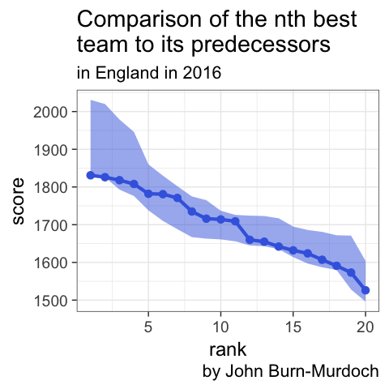
5. How to visualise over time?
facet: best country
allSeasons %>%
ggplot(aes(rank, score,
colour = country)) +
geom_line() +
#geom_point(size = 1.5) +
theme_classic(18) +
facet_wrap(~ year)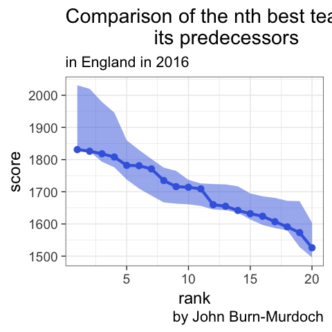
5. How to visualise over time?
facet: gap code
allSeasons %>%
select(score, year, rank, country) %>%
filter(country %in% c("ENG", "ESP")) %>%
spread(country, score) %>%
rowwise() %>%
mutate(gap = ESP - ENG,
min = min(ESP, ENG),
max = max(ESP, ENG)) %>%
ggplot(aes(x = rank, fill = gap > 0)) +
geom_rect(aes(xmin = rank - 0.5,
xmax = rank + 0.5,
ymin = min, ymax = max), alpha = 0.8) +
theme_classic(18) +
scale_fill_manual(name = "gap", labels = c("ENG", "ESP"),
values = c("royalblue", "red3")) +
labs(title = "quality gap",
subtitle = "between England and Spain",
caption = "by John Burn-Murdoch") +
facet_wrap(~ year)5. How to visualise over time?
facet: gap plot
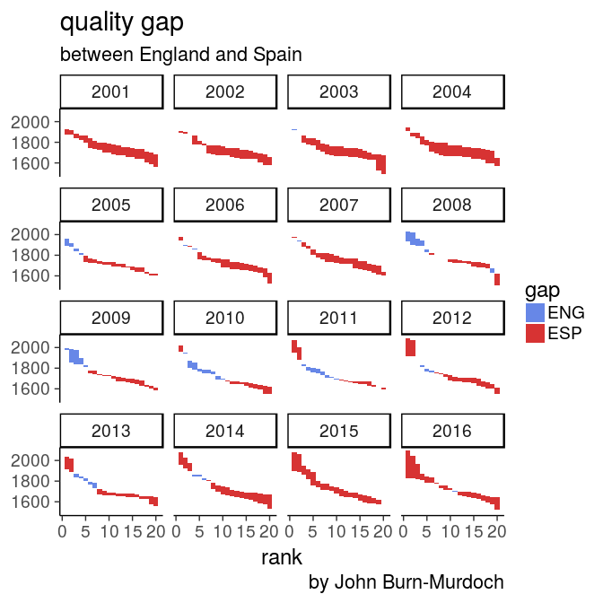
your turn
iris dataset
iris <- as_tibble(iris) iris
# A tibble: 150 × 5
Sepal.Length Sepal.Width Petal.Length Petal.Width Species
<dbl> <dbl> <dbl> <dbl> <fctr>
1 5.1 3.5 1.4 0.2 setosa
2 4.9 3.0 1.4 0.2 setosa
3 4.7 3.2 1.3 0.2 setosa
4 4.6 3.1 1.5 0.2 setosa
5 5.0 3.6 1.4 0.2 setosa
6 5.4 3.9 1.7 0.4 setosa
7 4.6 3.4 1.4 0.3 setosa
8 5.0 3.4 1.5 0.2 setosa
9 4.4 2.9 1.4 0.2 setosa
10 4.9 3.1 1.5 0.1 setosa
# ... with 140 more rowsglobal definition of the iris dataset
as a tibble to avoid printing all 150 rows
change default theme
I set for this course the following to avoid the grey bg and bigger text
ggplot2::theme_set(ggplot2::theme_bw(18))
Draw your first plot
iris %>% ggplot() + geom_point(aes(x = Petal.Width, y = Petal.Length))
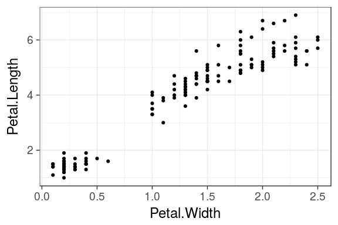
geometric objects
geoms define the type of plot which will be drawn.
geom_point()
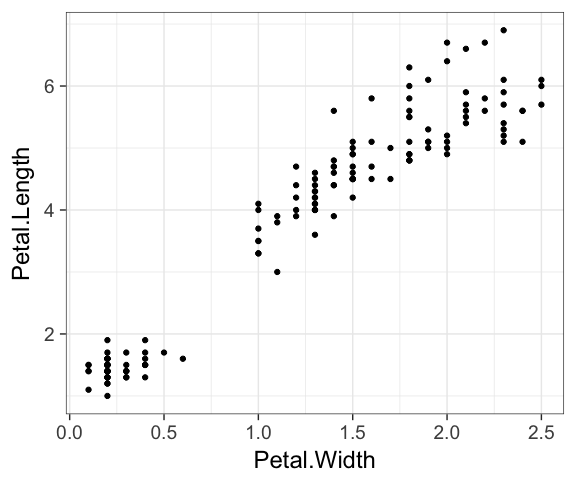
geom_line()
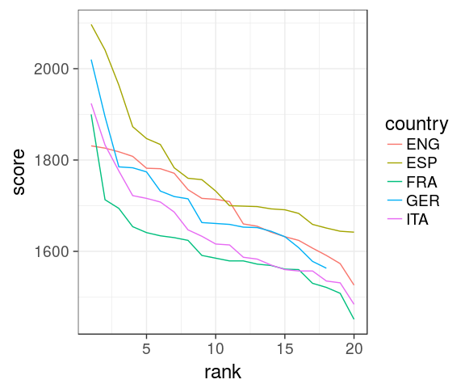
geom_bar()
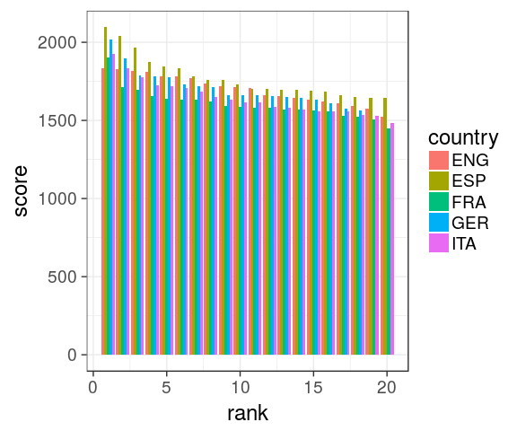
geom_boxplot()
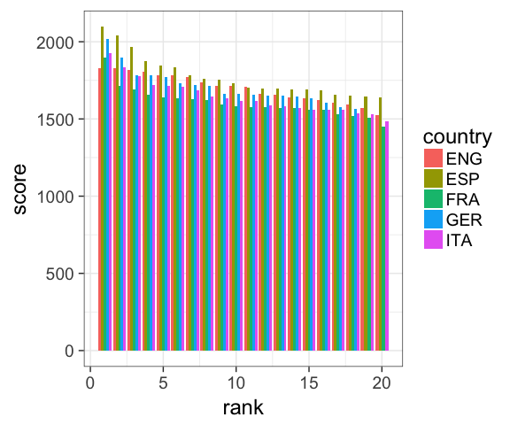
geom_histogram()
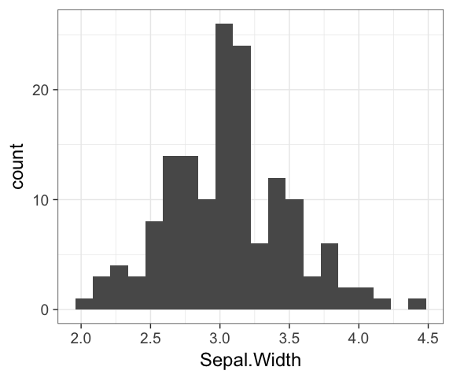
geom_density()
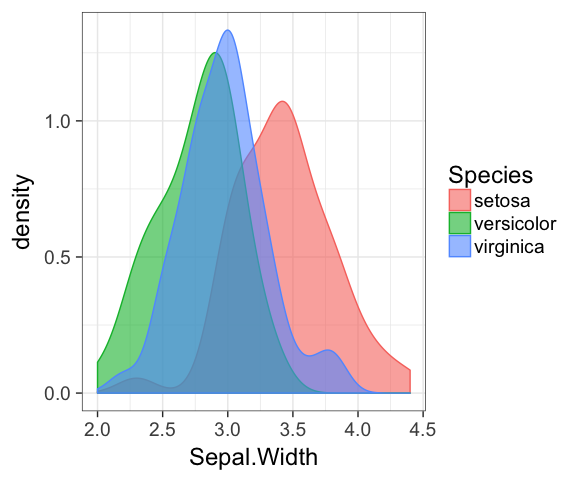
- Have a look at the cheatsheet or the ggplot2 online documentation to list more possibilities.
Mapping aesthetics
aesthetics map the columns of a data.frame/tibble to the variable each ggplot2 geom is expecting.
For example geom_point() requires at least the x and y coordinates for each point.
ggplot(iris) + geom_point(aes(x = Petal.Width, y = Petal.Length))
| Sepal.Length | Sepal.Width | Petal.Length | Petal.Width | Species |
|---|---|---|---|---|
| 5.1 | 3.5 | 1.4 | 0.2 | setosa |
| 4.9 | 3.0 | 1.4 | 0.2 | setosa |
| 4.7 | 3.2 | 1.3 | 0.2 | setosa |
Unmapped paramaters
Additional arguments such as the colour, the transparency (alpha) or the size.
ggplot(iris) +
geom_point(aes(x = Petal.Width,
y = Petal.Length),
colour = "blue", alpha = 0.6,
size = 3)
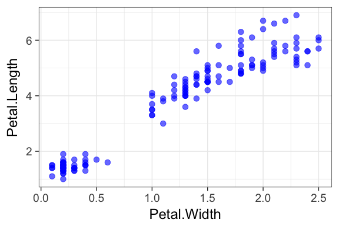
Important
see that paramaters define outside the aesthetics aes() are applied to all data
Mapping aesthetics
colour
colour, alpha or size can also be mapped to a column in the data frame.
For example: We can attribute a different color to each species:
ggplot(iris) +
geom_point(aes(x = Petal.Width,
y = Petal.Length,
colour = Species),
alpha = 0.6, size = 3)
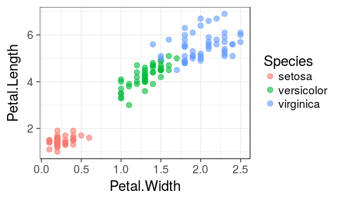
Important
Note that the colour argument now is inside aes() and must refer to a column in the dataframe.
Mapping aesthetics
shape
ggplot(iris) + geom_point(aes(x = Petal.Width, y = Petal.Length, shape = Species, colour = Species), alpha = 0.6, size = 3)
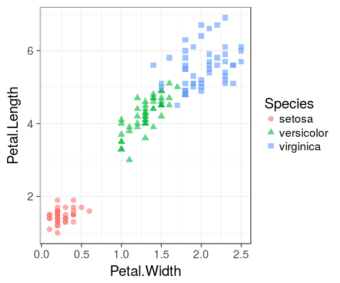
Labels
It is easy to adjust axis labels and the title
ggplot(iris) +
geom_point(aes(x = Petal.Width,
y = Petal.Length,
colour = Species),
alpha = 0.6, size = 3) +
labs(x = "Width",
y = "Length",
title = "Iris",
subtitle = "petal measures",
caption = "Fisher, R. A. (1936)")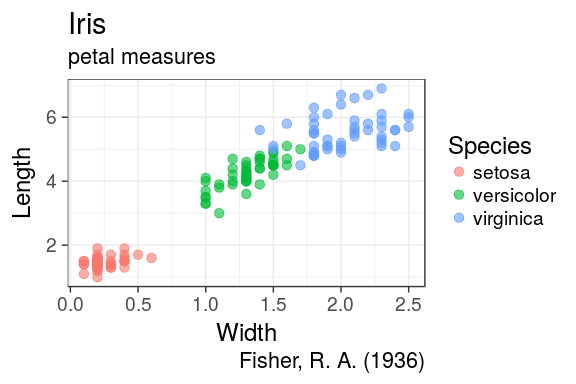
Histograms
ggplot(iris) +
geom_histogram(aes(x = Petal.Length,
fill = Species),
alpha = 0.6) `stat_bin()` using `bins = 30`. Pick better value with `binwidth`.
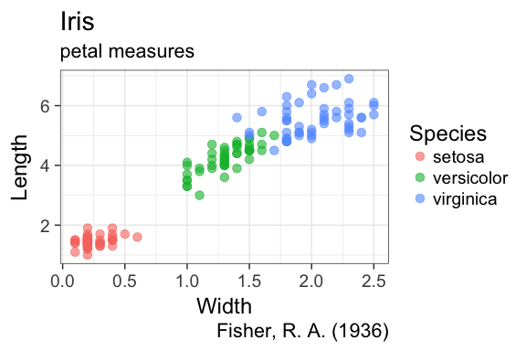
Density plot
The density is the count divided by the total number of occurences.
ggplot(iris) +
geom_density(aes(x = Petal.Length,
fill = Species),
alpha = 0.6)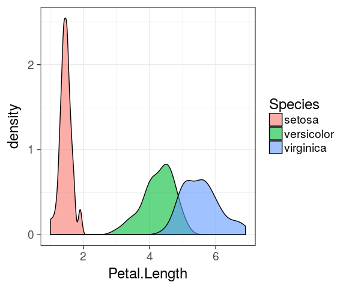
Overlaying plots
Density plot and histogram
ggplot(iris) + geom_histogram(aes(x = Petal.Length, y = ..density..), fill = "darkgrey", binwidth = 0.1) + geom_density(aes(x = Petal.Length, fill = Species, colour = Species), alpha = 0.4) + theme_classic()
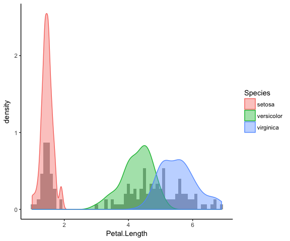
stat functions
- We used a new variable in the density plot:
..density.. In
ggplot2, variables surrounded by two pair of dots (..<variable>..) are intermediate values calculated byggplot2using stat functions- Every
geomuses astatfunction to transform the data:- For example
geom_histogram()andgeom_density()need to perform calculations in order to display the histogram or the density curve (Not as simple as plotting x and y values from two columns) geom_histogram()usesstat_bin()to divide the distributions into bins and count the number of observations in each bin.stat_bin()computes for example:count,density,ncountandndensity(see?stat_bin())- Here
..density..specifies that we would like to use such a computeddensitycolumn.
- For example
Barcharts
Categorical variables
- By default,
geom_bar()counts the number of occurences for each values of a categorical variable. geom_bar()usesstat_count()to compute these values (creating a newcountcolumn)
ggplot(iris) + geom_bar(aes(x = Species)) # or: geom_bar(aes(x = Species, y = ..count..))
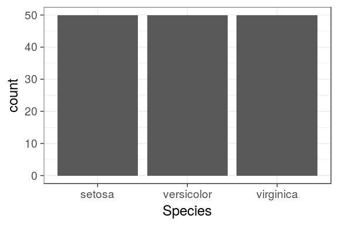
Barcharts
Categorical variables
- To map a continous variable on the y axis, we need to override the default call to
stat_count() stat = "identity"will forcegeom_bar()to usestat_identity()instead (leaving the original data unchanged)Petal.Lengthand not..Petal.Length..as it is not "new" and is already present in the original data frame
ggplot(iris) + geom_bar(aes(x = Species, y = Petal.Length), stat = "identity")
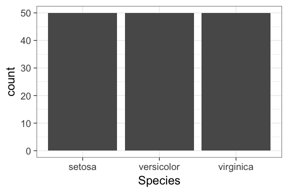
Update v2.1
since version 2.1, thanks to Bob Rudis, geom_col does require a y variable
geom_col
ggplot(iris) + geom_col(aes(x = Species, y = Petal.Length))
Stacked barchart
categorical variables
mtcars %>%
ggplot() +
geom_bar(aes(x = factor(cyl),
fill = factor(gear)))

Dodged barchart (side by side)
Categorical variables
mtcars %>%
mutate(cyl = factor(cyl),
gear = factor(gear)) %>%
complete(cyl, gear) %>%
ggplot() +
geom_bar(aes(x = cyl,
fill = gear),
position = "dodge")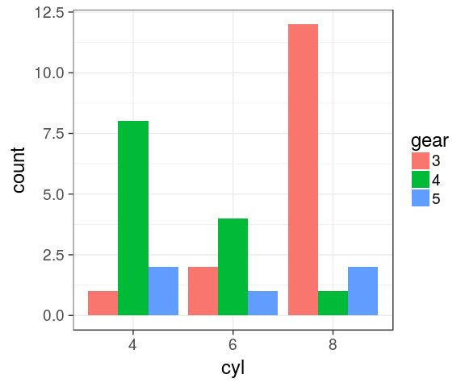
Complete
the combination gear 4 / cyl 8 is missing. Using tidyr::complete() to avoid bars with different widths.
Stacked barchart for proportions
categorical variables
mtcars %>%
mutate(cyl = factor(cyl),
gear = factor(gear)) %>%
complete(cyl, gear) %>%
ggplot() +
geom_bar(aes(x = cyl,
fill = gear),
position = "fill")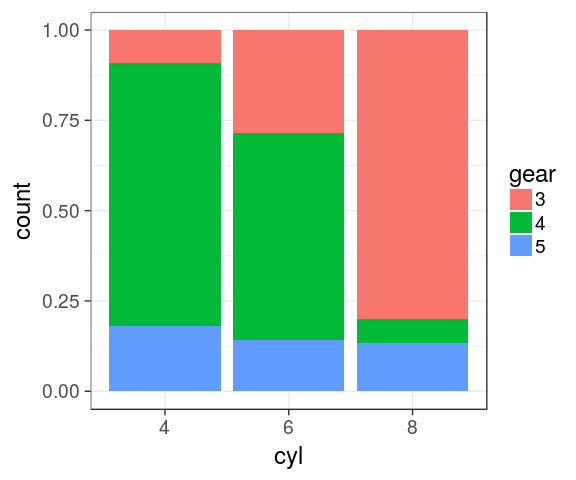
Stacked barchart for proportions
pie charts
We can easily switch to polar coordinates:
mtcars %>%
mutate(cyl = factor(cyl),
gear = factor(gear)) %>%
complete(cyl, gear) %>%
ggplot() +
geom_bar(aes(x = cyl,
fill = gear),
position = "fill") +
coord_polar()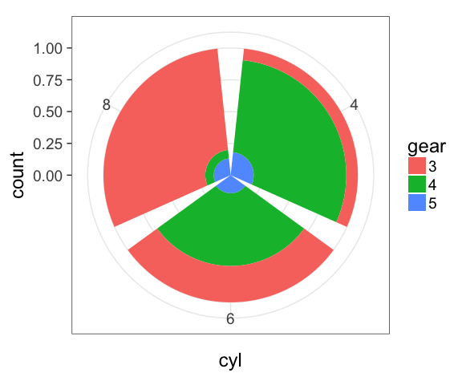
Boxplot
IQR, median
ggplot(mtcars) +
geom_boxplot(aes(x = factor(cyl),
y = mpg))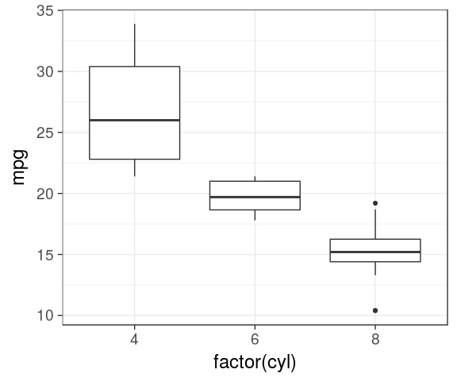
Boxplot
dodge by default
ggplot(mtcars) +
geom_boxplot(aes(x = factor(cyl),
y = mpg,
fill = factor(am)))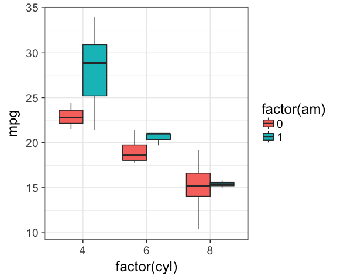
Custom colors
- It is possible to manually adjust the colors using
scale_fill_manual()andscale_color_manual() - Is not very handy as you must provide as much colours as groups
ggplot(mtcars) +
geom_boxplot(aes(x = factor(cyl),
y = mpg,
fill = factor(am),
color = factor(am))) +
scale_fill_manual(values = c("red", "lightblue")) +
scale_color_manual(values = c("purple", "blue"))
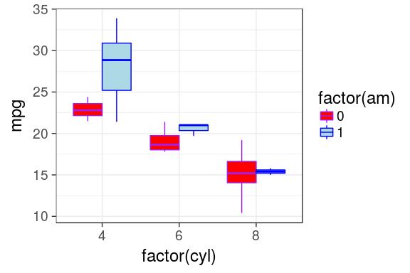
Predefined color palettes
library(RColorBrewer) display.brewer.all()
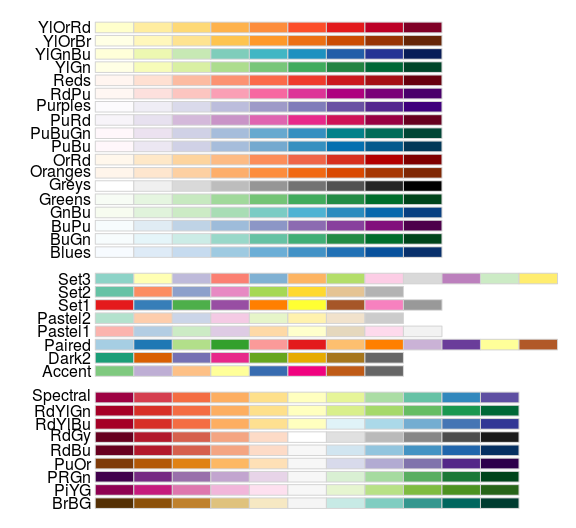
Custom colors
using brewer
ggplot(mtcars) +
geom_boxplot(aes(x = factor(cyl),
y = mpg,
fill = factor(am),
colour = factor(am))) +
scale_fill_brewer(palette = "Pastel2") +
scale_colour_brewer(palette = "Set1")
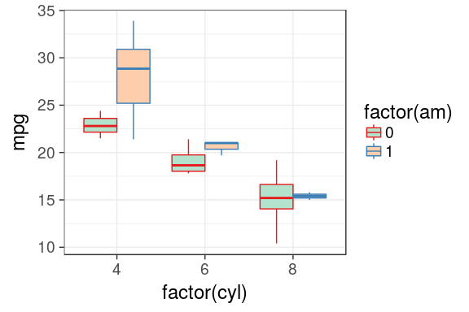
colour gradient
ggplot2 default is ugly
default
mtcars %>%
ggplot(aes(x = wt,
y = mpg,
colour = hp)) +
geom_point(size = 3)
viridis
mtcars %>%
ggplot(aes(x = wt,
y = mpg,
colour = hp)) +
geom_point(size = 3) +
viridis::scale_colour_viridis()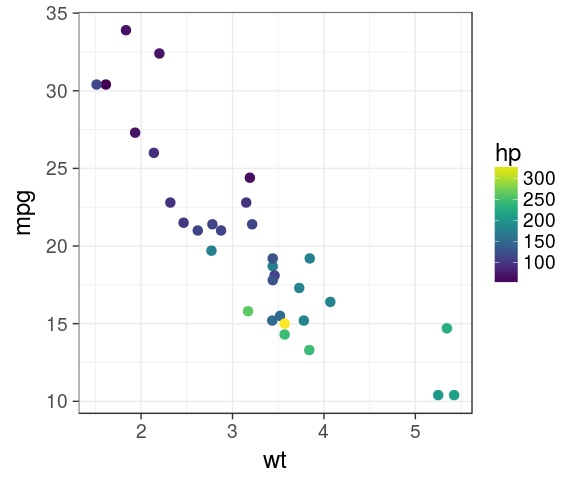
viridis is color blind friendly and nice in b&w
4 different scales
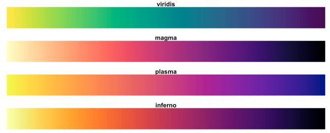
aesthetic trick
Actually, one can use a plain character inside aes(), will be used to build the legend. Useful for few layers when lazy enough to create the variable in the dataframe.
set.seed(123)
dens <- tibble(x = c(rnorm(500),
rnorm(200, 3, 3)))
ggplot(dens) +
geom_line(aes(x), stat = "density") +
geom_vline(aes(xintercept = mean(x), colour = "mean"),
size = 1.1) +
geom_vline(aes(xintercept = median(x), colour = "median"),
size = 1.1) -> p
p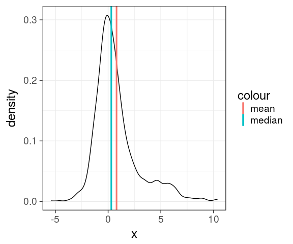
the data argument
each layer can get its own
dens_mode <- tibble(mode = density(dens$x)$x[which.max(density(dens$x)$y)])
p + geom_vline(data = dens_mode,
aes(xintercept = mode, colour = "mode"), size = 1.1) +
theme(legend.position = "top") +
scale_colour_hue(name = NULL) # could be: labs(colour = NULL)
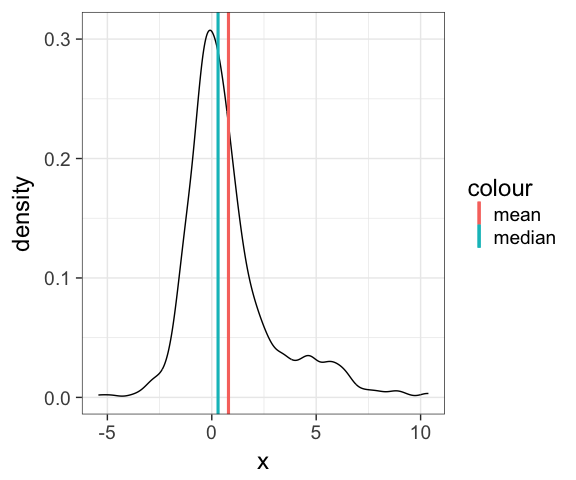
Facets
facet_wrap()
the easiest way to create facet is to provide facet_wrap() with a column name
ggplot(mtcars) + geom_point(aes(x = wt, y = mpg)) + facet_wrap(~ cyl)
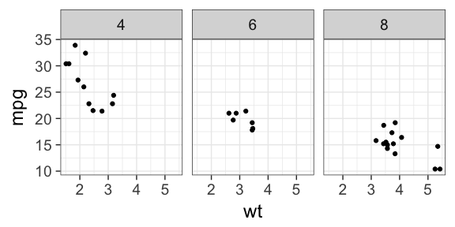
ggplot(mtcars) + geom_point(aes(x = wt, y = mpg)) + facet_wrap(~ cyl, ncol = 2)

Facets
free scales
ggplot(mtcars) + geom_point(aes(x = wt, y = mpg)) + facet_wrap(~ cyl, scales = "free_x")
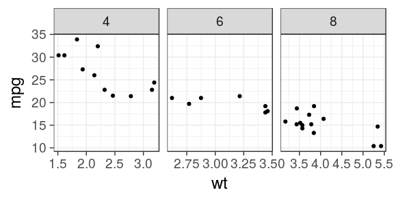
ggplot(mtcars) + geom_point(aes(x = wt, y = mpg)) + facet_wrap(~ cyl, scales = "free")

Facets
facet_grid() to lay out panels in a grid
Specify a formula
the rows on the left and columns on the right separated by a tilde ~ (i.e by)
ggplot(mtcars) + geom_point(aes(x = wt, y = mpg)) + facet_grid(am ~ cyl)

Facets
facet_grid() cont.
Specify one row/column
A dot (.) specifies that no faceting should be performed. Mimic facet_wrap()
ggplot(mtcars) + geom_point(aes(x = wt, y = mpg)) + facet_grid(. ~ cyl)
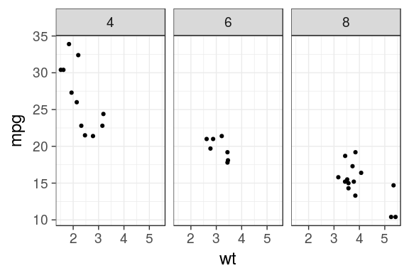
Facets
labeller
Add the column names with labeller
ggplot(mtcars) +
geom_point(aes(x = wt, y = mpg)) +
facet_grid(am ~ cyl,
labeller = label_both)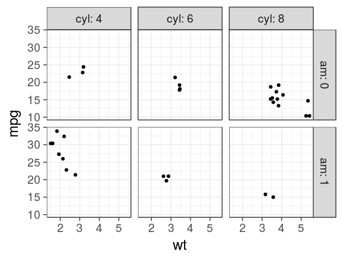
Exporting
interactive or passive mode
right panel
- Using the Export button in the Plots panel
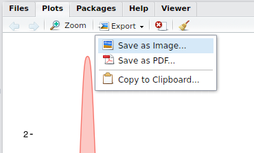
Rmarkdown reports
- If needed, adjust the chunk options:
- size:
fig.height,fig.width - ratio:
fig.asp… - others

ggsave
- save the
ggplotobject, 2nd argument - guess the type of graphics by the extension
ggsave("aes_trick.png", p,
width = 60, height = 30, units = "mm")
ggsave("aes_trick.pdf", p,
width = 50, height = 50, units = "mm")
Extensions
ggplot2 introduced the possibility for the community to contribute and create extensions.
They are referenced on a dedicated site

Art
by Marcus Volz
A compilation of some of my gifs created with #rstats #ggplot2 #gganimate #tweenr https://t.co/nCppSOZv4W
— Marcus Volz (@mgvolz) 4 avril 2017
Missing features
geoms list here
geom_tile()heatmapgeom_bind2()2D binninggeom_abline()slope
stats list here
stat_ellipse()stat_summary()easy mean 95CI etc.geom_smooth()linear/splines/non linear
plot on multi-pages
ggforce::facet_grid_paginate()facetsgridExtra::marrangeGrob()plots
positions list here
position_jitter()random shift
coordinate / transform
coord_cartesian()for zooming incoord_flip()exchanges x & yscale_x_log10()and yscale_x_sqrt()and y
customise theme elements
- legend & guide tweaks
- major/minor grids
- font, faces
- margins
- labels & ticks
- strip positions
programming
aes_string()for plotting insidefunction